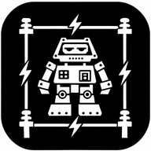

CHASE '76
A CLASSIC BASIC SURVIVAL GAME • WEB EDITION
CK MY APPS
RETRO ARCADE
RETRO ARCADE
ROUND 01ROBOTS: 5 / 5MOVES: 0
Tap a direction, use the keyboard 1–9 / arrows, or swipe on the maze. 0 jumps to a random location — possibly a deadly one.
HOW TO PLAY
You are the * inside a high-voltage maze. Five + interceptor robots chase you. The X fences are lethal to you and to them.
- Move one square in any of eight directions using the on-screen keypad, numeric keys 1–9, arrow keys, or a swipe.
- After each move, all surviving robots move one square toward you. Lure them into X fences or into each other.
- Destroy all five robots to win. Contact with a robot or a high-voltage fence means game over.
- 0: Make a random leap to another square. It might land on danger. 10: Stop moving and let all remaining turns play out. −1: Give up.
Inspired by the 1970s Creative Computing BASIC game. This version is a new browser implementation with touch controls, local statistics, and original synthesized sound effects.
SETTINGS
ARCADE SOUND
HIGH CONTRAST
CREDITS
Created by Christos A. Kazantzoglou
CK My Apps — ckmyapps.github.io
Original CHASE attributed to Mac Oglesby; modified by Bill Cotter and Arnold Loveridge. Published by Creative Computing (1976).
Web adaptation inspired by the BASIC listing in More BASIC Computer Games. Synthesized arcade sounds generated locally in your browser.
CK My Apps — ckmyapps.github.io
Original CHASE attributed to Mac Oglesby; modified by Bill Cotter and Arnold Loveridge. Published by Creative Computing (1976).
Web adaptation inspired by the BASIC listing in More BASIC Computer Games. Synthesized arcade sounds generated locally in your browser.